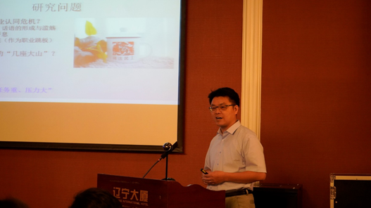

收录于合集
7月5日上午，第十四届政治学与国际关系共同体会议“比较视野中的法律、法院与司法治理”分论坛在北京市海淀区辽宁大厦7层锦州厅- F举行，作为线上线下融合论坛，共有来自多个国家和地区的26位学者与会做了报告。会议延续了前一日的热烈气氛，在面对面互动中推向高潮。
第五单元
左卫民
第五单元由四川大学法学院教授左卫民主持。东南大学法学院副教授冯煜清报告了一项关于司法判决的合作研究，基于十余万份寻衅滋事判决书的实证分析，揭示了依法治国宏观背景下，法官面对压力倾向于选择有韧性的审判裁量方式，以寻求法律效果、社会效果和政治效果的平衡与统一。
冯煜清
台湾地区“中研院”法律学研究所研究员张永健报告了关于美国最高法院判例引用情况的合作研究，通过分析2003-19年美国48个州最高法院引用判例的状况，揭示了判例引用频率的恒定下降趋势，在此基础上进一步探究法官先例引用的影响因素，分析发现判例的篇幅、案件的类型都会对判例引用产生显著影响，相反，法官个人因素（人口统计学要素和法官态度等）对判例引用并没有显著影响。
张永健
加拿大麦吉尔大学政治学系副教授王娟分享了与合作者共同完成的关于中国村干部管理的历史性考察研究，通过梳理1949-2021年中国村级基层干部管理机制的变迁，研究发现党和国家主要通过政策规定、运动型纪检、司法程序三大方式管理村干部，但在不同时段对各种方式的倚重有所不同。自新中国成立以来，政策法规一直是约束村干部的主要方法，1978年和2018年是重要转折点，特别是2018年以来更强调村干部应受到党规和国法的双重约束。
王 娟
美国西北大学管理学院博士生孙卉分享了一项关于法官和律师关系的合作研究，该研究分析了2014-19年20多万份企业合同纠纷，研究发现与法官关系更紧密的律师更有可能赢得案件，但原告律师和被告律师依赖不同的关系嵌入机制。在此基础上，研究者进一步做了一些机制性探讨。
孙 卉
香港中文大学法律学院教授习超报告了一项关于中国法院信息扩散的研究。研究者们通过一项巧妙的半自然实验的研究设计，探讨司法判决中对司法解释的援引情况，并据此分析法院间信息扩散的基本逻辑。研究发现，中国上下级法院间的等级关系、平级“兄弟法院”间的竞争与学习机制、文化和地理上的连接等多种因素都有助于信息或者说法律在法院系统的扩散。
习 超
清华大学政治学系副教授于晓虹、清华大学政治学系副教授胡悦共同担任本单元评议人。于老师指出本组论文综合运用了定性定量多种研究方法，论文主题既涉及法律、法院，也与司法治理有关，完美切合了会议主题。张永健老师和习超老师的论文从不同的视角探讨了法律本身的流动与演变，是法律实证研究中鲜见的主题。张永健老师的研究还可以进一步探讨法院与法官异质性影响，考虑案件事实的控制，案外因素如媒体、律师、案例平台等方面的影响。习超老师通过精巧的研究设计创新性的探讨了法律在中国地方法院之间的流动，未来也同样可以关注律师、当事人和法院间沟通与交流在法律和信息流动中起到的作用。冯老师提出的司法韧性概念非常有穿透力，案件类型的选择、案件事实的控制以及内生性等问题还可以再探讨。王老师和牟老师的研究具有历史视野，最近的法律和政策变动产生的影响还需要进一步观察与探讨。
于晓虹
胡悦老师认为这是一组非常精彩的研究，着重对几篇文章的研究方法进行了评论。冯老师的研究未来可以考虑事件史分析，并就影响机制作更多探讨。张老师等的研究可以更多的考虑案件、法院层面的因素。王娟老师的研究主要从定性研究的角度为我们理解国和民的关系打开了新的视角。孙卉等的研究需要进一步考虑对关系型嵌入的测量，也可以考虑对匹配后的样本作进一步稳健性检验。习超老师的研究对法院信息扩散的机制作了非常有意义的探讨，未来可以考虑充分利用数据做一些空间分析，此外，文章关于文化和地理因素的影响还需要深入探讨其背后的机制。
胡 悦
第六单元
白建军
北京大学法学院教授白建军主持了本次研讨会最后一个单元。山东大学金融研究院教授魏建报告了关于版权保护的合作研究。魏老师等基于2015-20年著作权侵权案件，探讨了不同权利保护方式的绩效，发现从原告胜诉率的角度来看，策略性诉讼者商业化保护原告胜诉率最高；从金额、时间效率的角度看，中国音集协代理保护效率最高。魏老师指出，版权价值实现具有弹性，因此激励版权价值实现是一个重要的社会目标。版权主体最应该得到司法保护，但这种权利保护仍有待现实层面的完善。
魏 建
上海交通大学凯原法学院教授程金华教授分享了一篇关于中国法官职业认同的实证研究。程老师通过对千余名法院工作人员的问卷调查，测量了法官的职业认同。程老师认为整体上中国法官具有可观的职业认同，但其中组织保障认同和自我实现认同还有待提高。研究进一步用OLS模型检验了影响法官职业认同的因素，简单的说，“看多，做多，工作多”大概率导致负面认同。我国司法改革还应进一步加强对法官的组织保障，强化法官的自我实现。

程金华
中国政法大学刑法学院教授郭志媛综合运用访谈、参与式观察、小组座谈与文本分析的方法探讨了中国刑事庭审中的交叉询问实践。郭老师认为，从规范层面而言，我国还没有正式建立交叉询问规则，但已有一定基础，一些现有的规定影响了交叉询问实践；实践层面来看地区差异很大，但并无规则可循。郭老师提出我国亟需确立交叉询问规则，从长远来看我国应确立涵盖询问次序、诱导性询问规则、异议规则以及传闻排除规则等多个面向的综合规则。
郭志媛
清华大学政治学系博士生李熠汇报了和孟天广老师共同完成的立案登记制研究。他们运用时间断点回归的政策实验方法检验了立案登记制对行政诉讼的影响，研究发现立案登记制改革显著提升了行政诉讼率。研究进一步归纳了制度赋权、司法动员和内部监督等作用机制。
李 熠
清华大学公管学院助理教授陈天昊的合作研究基于政策过程理论探讨了法院的信息功能。研究回顾了中国新兴产业的监管实践，观察了地方法院的参与情况，探索了法院在政策过程中的信息发现机制。通过对数据保护、平台责任、行业竞争等六个典型的司法判例的分析，陈老师等提出司法纠纷的数量和法官的专业性使得法院在信息收集、扫描和提取方面表现出色，可以辅助公共政策的边界和替代方案的生成。
陈天昊
在评议环节，清华大学法学院副教授陈杭平对以上研究表示高度认可，同时认同白建军老师的观点，认为法律研究应该基于问题驱动而不是方法驱动，本单元文章非常完整、规范，把握了实证研究的大趋势；同时也指出研究应考虑到质感与深度，一些文章应进一步澄清概念定义。魏建等的文章应当完善对“胜诉”概念的定义，加强对实地诉讼的效率问题的关注；李熠等的研究是运用裁判文书进行实证研究的典范，未来进行大数据统计分析时也应当更加关注个案经验；程老师的研究未来可以继续探讨法官性别与层级的关联是否对职业认同产生影响。
陈杭平
西南政法大学法学院冯晶老师结合自身学术历程以及对相关发表规范的理解进行了评议。程老师的研究在变量选择与划分维度等方面做出了精彩的尝试，文献综述和结论部分还有待完善，未来也可以考虑增加一些控制变量，例如地区差异等，以进一步考察法官职业认同的影响机制。郭老师的文章选题独特，证人证言问题对中国诉讼制度至关重要，亟需实证考察，未来可以考虑适当调整文章结构。陈老师等的研究体现了学科交融、理论与实践的结合，还需要加强文献综述的批判性，建议对文章结构再作调整，并加强对既有案例数量合理性的论证。
冯 晶
会议总结
张小劲
最后，清华大学政治学系教授张小劲从多个视角进行了会议总结，他首先指出此次会议不仅体现了“法学集团军”对政治学研究的加入，也是基于多学科背景共同分享知识经验、研究方法的盛会。他感谢法学界各位专家与新锐的参与，希望类似的活动能成为本次共同体会议固定的风景。接着，张老师高度肯定了法治问题对中国的重要性，从供给侧和需求侧的角度深刻剖析了法学研究为什么能够吸引多学科关注。然后，张老师回顾了清华大学的法政研究历史传统，指出法政实证研究已经得到继承与光大。最后，张老师概括分析了本次论坛的论文和发言，认为从内部视角、用实证资料深入研究广泛的法学问题与从外生变量出发追问法学法律和法治与社会政治生活的因果关联，共同构成了本次会议讨论的亮点，可以帮助我们更好地理解和解答相关经验困惑与理论困惑。总之，学科与科学、理论与现实之间的对话将促进学术发展与新文科建设。至此，为期两天的研讨会在掌声中落下帷幕。